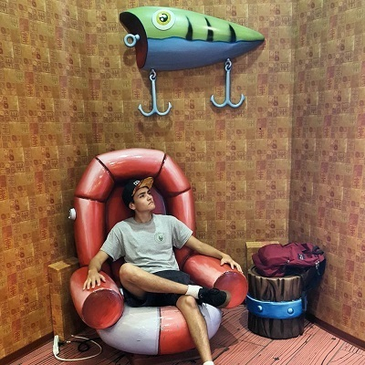
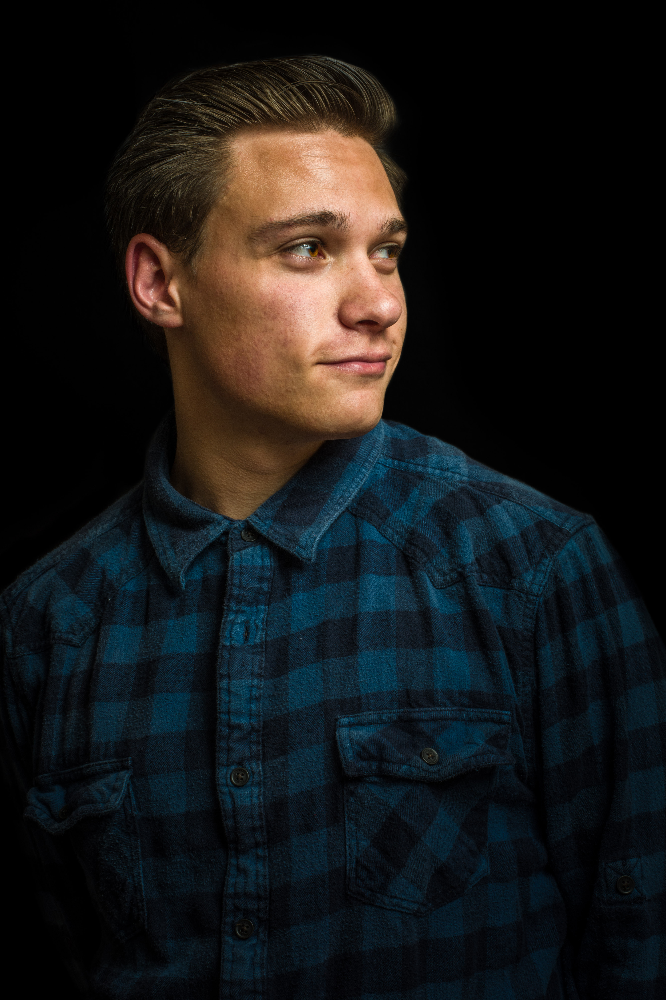

About us
The three of us are studying production in the IFDM program. On this site, we are highlighting our various interests and takeaways from Cs-105.
Jon Solis
 Jon is in the IFDM program pursuing a career in film. Jon Enjoys photography and film making.
Jon Created an array involving multiple sliders. He also created a link to the array.
Luke is in the IFDM program and likes enjoys cinematography and editing.
Luke created an array for the project.
Ryan Williamson
 Ryan Is studying production in the hopes of becoming a film maker. Ryan has loved drawing his whole life,and is quite passionate about film.
Ryan created the html for this page and contributed to the array. He also designed the logo.